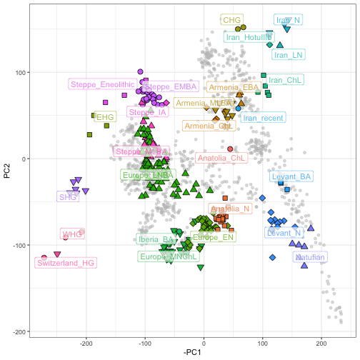

This Vignette provides an example of projecting ancient DNA onto modern data in a PCA analysis using the smartsnp package. We will use data from one of the first large-scale ancient DNA studies, Lazaridis et al. 2016:
Lazaridis et al. “Genomic insights into the origin of farming in the ancient Near East”, Nature volume 536, pages 419–424 (2016).
The data is available online but needs to be pre-processed. Particularly, the aDNA data needs to be merged with modern data. All steps can be completed in R, but some need certain command-line software installed - they won’t work on a Windows machine.
If you are just interested in how to run smart_pca with ancient samples (all you need is an index vector aDNA_inds with the column numbers of the ancient samples), feel free to go straight to the section “Running smartpca” below.
Select one of two options.
Install development version from GitHub:
install.packages("devtools")
devtools::install_github("ChristianHuber/smartsnp")Install release version from CRAN:
install.packages("smartsnp")Load the package:
First, set the working directory to a location where you want to download and process the files. In my case, I’m choosing the Downloads directory in my home folder.
We will download the data provided here https://reich.hms.harvard.edu/datasets using a command-line software called wget. Alternatively, you can download the file using a browser and the link. Note that this is quite a large file, >200 Mb!
system("wget https://reich.hms.harvard.edu/sites/reich.hms.harvard.edu/files/inline-files/NearEastPublic.tar.gz")The downloaded data has to be unzipped. I will unzip it into a new folder called “data”.
The data is in a PACKEDANCESTRYMAP format. The ancient and modern data is in two different files, and we are only interested in the Western Eurasian subset of the modern samples.
In the next step, we will filter out the Western Eurasian samples from the full set of modern samples. Then, we will merge the modern with the ancient data.
The convertf and mergeit command-line software of the Eigensoft package conveniently allows to run these two operations, see here for installation: https://github.com/DReichLab/EIG
To run Eigensoft software within R using the system function, you might need to first explicitly tell R where the software can be found:
# Path to Eigensoft binaries (might be different on your computer):
pathToEIGENSOFT = "~/repos/EIG/bin/"
Sys.setenv(PATH = paste(Sys.getenv()["PATH"], paste0(":", pathToEIGENSOFT), sep=""))We need to generate a parameter file for convertf that contains all the file names. We also need to generate a list of West Eurasian populations in a text file.
# Generating a text file with West Eurasian group names
westEurasian_pops <- c(
"Abkhasian", "Adygei", "Albanian", "Armenian", "Assyrian", "Balkar", "Basque", "BedouinA", "BedouinB", "Belarusian", "Bulgarian", "Canary_Islander",
"Chechen", "Croatian", "Cypriot", "Czech", "Druze", "English", "Estonian", "Finnish", "French", "Georgian", "German", "Greek", "Hungarian", "Icelandic",
"Iranian", "Irish", "Irish_Ulster", "Italian_North", "Italian_South", "Jew_Ashkenazi", "Jew_Georgian", "Jew_Iranian", "Jew_Iraqi", "Jew_Libyan", "Jew_Moroccan",
"Jew_Tunisian", "Jew_Turkish", "Jew_Yemenite", "Jordanian", "Kumyk", "Lebanese_Christian", "Lebanese", "Lebanese_Muslim", "Lezgin", "Lithuanian", "Maltese",
"Mordovian", "North_Ossetian", "Norwegian", "Orcadian", "Palestinian", "Polish", "Romanian", "Russian", "Sardinian", "Saudi", "Scottish", "Shetlandic", "Sicilian",
"Sorb", "Spanish_North", "Spanish", "Syrian", "Turkish", "Ukrainian"
)
# Generating the parameter file for convertf:
par.ANCESTRYMAP.FILTER <- c(
"genotypename: ./data/HumanOriginsPublic2068.geno",
"snpname: ./data/HumanOriginsPublic2068.snp",
"indivname: ./data/HumanOriginsPublic2068.ind",
"poplistname: ./WestEurasia.poplist.txt",
"genotypeoutname: ./data/HumanOriginsPublic2068.WestEurasia.geno",
"snpoutname: ./data/HumanOriginsPublic2068.WestEurasia.snp",
"indivoutname: ./data/HumanOriginsPublic2068.WestEurasia.ind"
)
writeLines(par.ANCESTRYMAP.FILTER, con = "par.ANCESTRYMAP.FILTER")
# Now run convertf using the system command in R. This is equivalent to running the quoted command in a terminal:
system("convertf -p par.ANCESTRYMAP.FILTER")Now we combine the ancient samples with the modern data using mergeit. Again, we first need a parameter file and then we can run mergeit with the system function in R (or alternatively in the terminal).
params <- c(
"geno1: ./data/HumanOriginsPublic2068.WestEurasia.geno",
"snp1: ./data/HumanOriginsPublic2068.WestEurasia.snp",
"ind1: ./data/HumanOriginsPublic2068.WestEurasia.ind",
"geno2: ./data/AncientLazaridis2016.geno",
"snp2: ./data/AncientLazaridis2016.snp",
"ind2: ./data/AncientLazaridis2016.ind",
"genooutfilename: ./data/AncientLazaridis2016_ModernWestEurasia.geno",
"snpoutfilename: ./data/AncientLazaridis2016_ModernWestEurasia.snp",
"indoutfilename: ./data/AncientLazaridis2016_ModernWestEurasia.ind"
)
writeLines(params, con = "mergeit.params.txt")
system("mergeit -p mergeit.params.txt")We still need two additional vectors before we can run smartsnp: one that defines the ancient samples, and one that defines which samples we want to remove before running the PCA.
# Group names of the ancient groups
aDNA_inds <- c("Anatolia_ChL", "Anatolia_N", "Armenia_ChL", "Armenia_EBA", "Armenia_MLBA", "CHG", "EHG", "Europe_EN", "Europe_LNBA", "Europe_MNChL", "Iberia_BA", "Iran_ChL", "Iran_HotuIIIb", "Iran_LN", "Iran_N", "Levant_BA", "Levant_N", "Natufian", "SHG", "Steppe_EMBA", "Steppe_Eneolithic", "Steppe_IA", "Steppe_MLBA", "Switzerland_HG", "WHG")
# Contains group names of all groups in merged data
GR <- read.table("./data/AncientLazaridis2016_ModernWestEurasia.ind", header=F)
# Vector defining ancient and modern groups
SA <- ifelse(GR$V3 %in% westEurasian_pops, "modern", "ancient")
# Samples to remove:
sample.rem <- c("Mota", "Denisovan", "Chimp", "Mbuti.DG", "Altai",
"Vi_merge", "Clovis", "Kennewick", "Chuvash", "Ust_Ishim",
"AG2", "MA1", "MezE", "hg19ref", "Kostenki14")
# Simple index vectors that determines which samples to remove and which to use for PCA ordination or projection:
SR <- which(GR$V3 %in% sample.rem) # Column numbers of samples to remove
SP <- which(SA == "ancient") # Column numbers of samples to project (i.e. aDNA)Now we are finally ready to run smart_pca:
# Running smart_pca:
sm.pca <- smart_pca(snp_data = "./data/AncientLazaridis2016_ModernWestEurasia.geno",
sample_group = GR$V3, missing_value = 9, missing_impute = "mean",
scaling = "drift", program_svd = "RSpectra", pc_axes = 2,
sample_remove = SR, sample_project = SP, pc_project = 1:2)
# To see more information on the different parameter options:
?smart_pcaWe can have a look at the result using ggplot2 (and ggrepel for labeling the groups). The data.table package is used to simplify some data operations. For more info on these packages, see:
https://ggplot2.tidyverse.org/
https://cran.r-project.org/web/packages/ggrepel/vignettes/ggrepel.html
https://cran.r-project.org/web/packages/data.table/vignettes/datatable-intro.html
# This needs the R libraries ggplot2, ggrepel, and data.table.
library(ggplot2)
library(ggrepel)
library(data.table)
# Plotting with ggplot2 and labeling the groups with ggrepel:
smart_mva.aDNA_WestEurasia.evec <- data.table(sm.pca$pca.sample_coordinates)
smart_mva.aDNA_WestEurasia.evec[, c("PC1mean", "PC2mean") := .(mean(PC1), mean(PC2)), Group]
smart_mva.aDNA_WestEurasia.evec[, Name := GR$V1]
ggplot() +
geom_point(data = smart_mva.aDNA_WestEurasia.evec[Class == "PCA"], aes(-PC1, PC2), col="grey", alpha=0.5) +
geom_point(data = smart_mva.aDNA_WestEurasia.evec[Class == "Projected" ], aes(-PC1, PC2, fill=Group, shape=Group), size=3) +
scale_shape_manual(values=rep(21:25, 100)) +
geom_label_repel(data = smart_mva.aDNA_WestEurasia.evec[Class == "Projected",.SD[1], Group], aes(-PC1mean, PC2mean, label=Group, col=Group), alpha=0.7, segment.color="NA") +
theme_bw() + theme(legend.position = "none")
Voila! Note that we have plotted the negative of PC1 (i.e. -PC1) here. The only reason for this is to make the plot have the same orientation as the original plot in Lazaridis et al. (2016), Fig. 1B. Importantly, changing the sign of any axis of an PCA does not change its interpretation, and different software can give different signs. See the excellent explanation here:
Finally, let’s move back to the old working directory:
setwd(oldwd)